Vent and pump samples into load lock
Test UHV compatibility in an ex-situ chamber
This is a mandatory for liquid samples and strongly recommended for solid samples, especially if there are any doubts that off-gassing, leaks, etc. may occur. These samples can be pumped down in an ex-situ chamber to ensure they can reach necessary UHV pressures and that they remain intact during the pump-down process. Only samples that pass this test should be pumped down into a beamline load lock.
Liquid samples used in NIST’s custom flow cell should be pumped down using the Hummingbird system. The picture below shows the Hummingbird system for testing UHV compatibility of liquid flow cell samples mounted onto NIST’s custom TEM holder. The system uses a Pfeiffer Vacuum pump, and the settings can be viewed and edited using the buttons and screen on the top right-hand portion of the picture. The top left-hand portion is the chamber where the TEM holder can be loaded. In the picture, a rubber plug is loaded to seal the empty chamber.
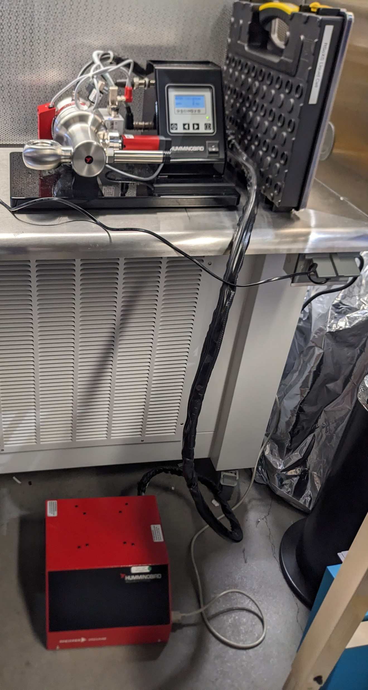
Solid samples (or liquid samples mounted onto the high-throughput bar) can be sealed in a chamber that is connected to a HiCUBE system. A sample bar with mounted samples can be loaded into the chamber. Then, seal the chamber using a DN100CF (6”) flange, G-600 copper gasket, and at least 8 nuts. Ensure that the gasket is aligned and flush with the flange grooves. Tighten the nuts using a star pattern to ensure there is even pressure on the gasket.
The picture below is a HiCUBE system for testing UHV compatibility of samples mounted onto high-throughput solid sample bar. The system uses a Pfeiffer Vacuum pump. Behind the pump, there is a venting valve that should be closed before switching on the pump. Samples can be loaded into the chamber removing the left-hand flange. There is a valve on the right-hand side of the chamber that can be opened or closed using a torque wrench to isolate the chamber from the pump.
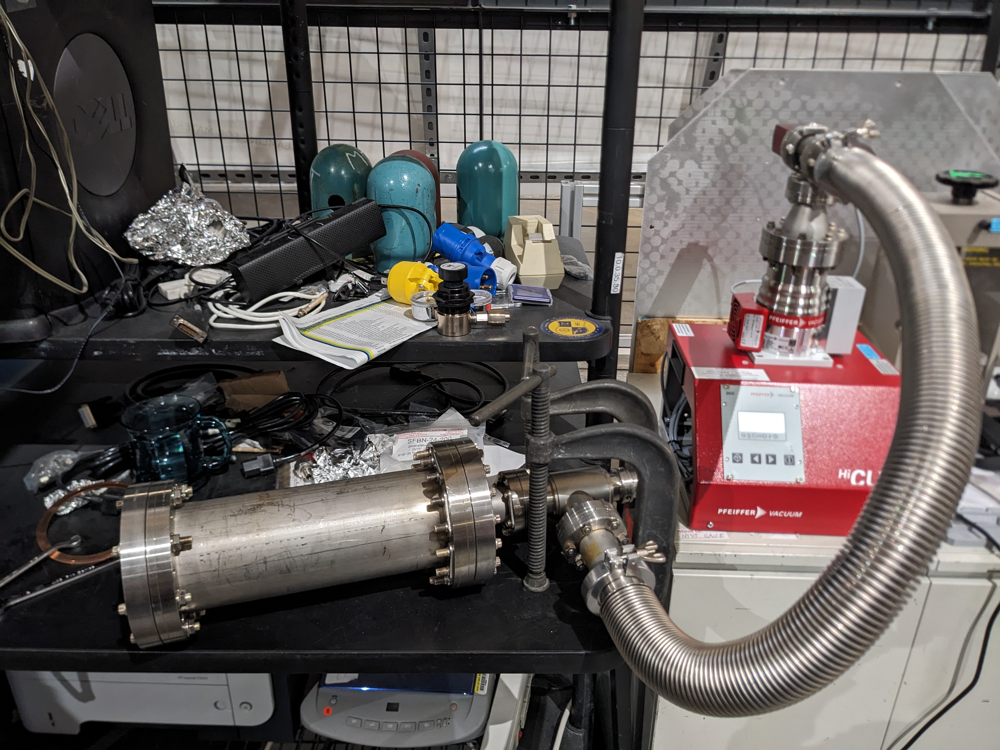
First, test the empty chamber to ensure there are no leaks or contamination. The pump has a venting valve on the back side; ensure it is closed before switching on the pump. The chambers for samples mounted onto both the TEM holder and the high-throughput solid sample bar are pumped using a Pfeiffer vacuum pump, and the settings can be viewed and edited using the screen and buttons. If necessary, the right and left arrow keys can be pressed at the same time to edit a value and then pressed at the same time again to save the set value. Use the left and right arrow keys to navigate to “340: Pressure”. In some cases, a few cycles of pumping may be necessary to remove all moisture present in the system. Do not proceed to testing samples unless the empty chamber can be pumped down successfully.
After the empty chamber has been pumped down successfully, load the samples and follow the same steps for pumping down. Use the table below to check that the chamber/samples can be pumped down to sufficient vacuums
| Pump spin speed | 1200 Hz | 1500 Hz | 1 h | 2 days |
|---|---|---|---|---|
| Hummingbird system, empty with rubber stopper |
1.2e-5 | 5.4e-6 | ||
| Hummingbird system, with TEM holder and liquid sample |
1.4e-5 | 7.4e-6 | 4.6e-8 | |
| Hummingbird system, with TEM holder and liquid sample, maximum tolerable pressures |
1.9e-5 | 8.6e-6 | ||
| HiCube system, pump + blanking flange |
1e-5 | 6.3e-6 | ||
| HiCube system, pump + hose + blanking flange |
3.4e-5 | 1.5e-5 | ||
| HiCube system, pump + hose + high-throughput solid sample bar (no samples) with copper tape + blanking flange |
3.4e-5 | 2.2e-5 | 4.6e-7 |
Pump down samples into load lock
Follow the instructions to mount solid samples onto the high throughput bar, solid samples into the TEM temperature control sample holder, and the liquid/gas holder. Throughout the whole pump-down process, ensure that the RSoXS main chamber pressure stays below 2e-7 Torr. If this pressure is exceeded at any point, close load lock gate valves, abort any venting processes, and pump down the load lock.
Solid sample high throughput bar
Vent load lock
Ensure that sample manipulator is completely withdrawn into the load lock and that nothing impedes the gate valve.
In the beamline operation terminal or GUI enter
y a 345. Alternatively, in PyDM, ensure that RSoXS Up Down (y motor) > 345. Also check visually that the y motor bellows is extended all the way upwards. This manipulator is most important to have out of the way so that nothing impedes the gate valve. The picture below is the outboard side of the RSoXS chamber with the red box highlighting the up-down motor bellows.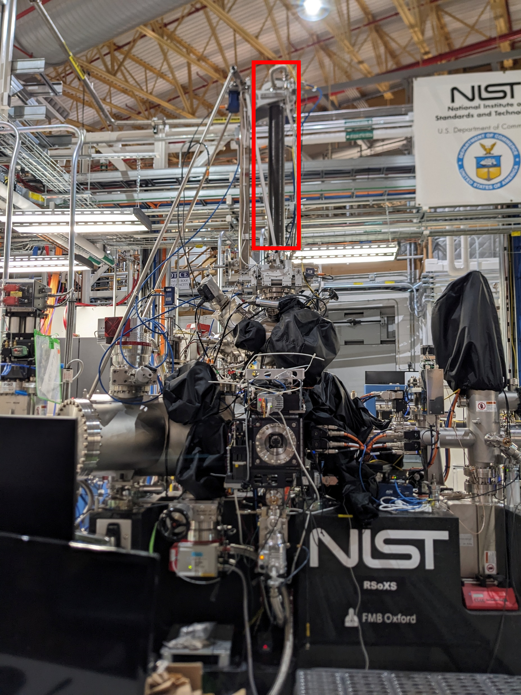
In the beamline operation terminal or GUI enter
th a 0. Alternatively, in PyDM, ensure that RSoXS Rotation = 0. This helps ensure that in the future, the next bar is not loaded backwards by accident.
Isolate the necessary components of the chamber.
- Isolate the RSoXS station by closing photon shutter 10, the upstream endstation gate valve 27A, and the downstream gate valve 28. This ensures that any potential leaks during the venting process do not contaminate the rest of the beamline and storage ring. NSLS II rules do not permit a gate valve to impede beam. Thus, an upstream shutter must be closed to impede the beam.
The PyDM screenshot below shows the shutter and gate valves that should be closed to isolate RSoXS chamber. Green indicates open, and gray indicates closed. A shutter upstream of a gate valve must be closed before the gate valve can be closed such that the closed gate valve is not in the direct path of the X-ray beam.
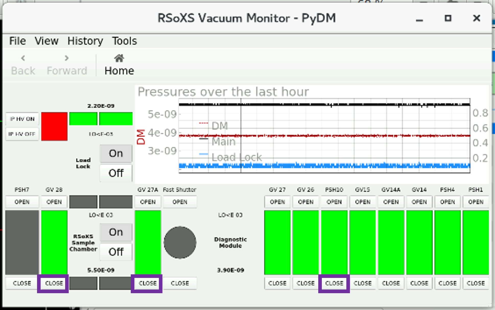
Manually close the load lock gate valve (red box), and check on the PyDM RSoXS Vacuum Monitor (purple box), which should show gray. This isolates the load lock from the main chamber to protect sensitive equipment and accelerate venting/pumping times in a smaller-volume load lock.
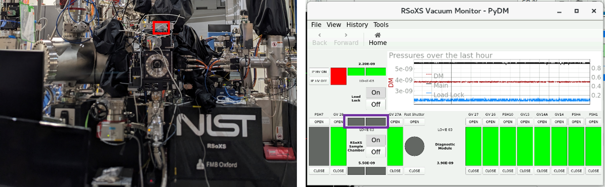
Manually isolate the y motor bellows. This part can take a long time to pump down, so it is best to not break vacuum here where possible. The picture below is a view of the inboard side looking downstream between the SST-1 and SST-2 beamlines. The red box is the valve to isolate the bellows.
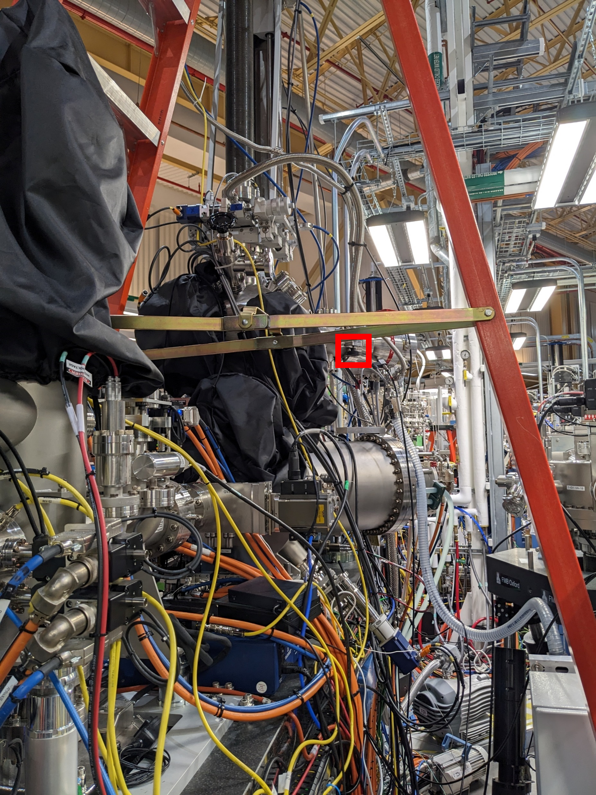
Turn off the load lock ion gauge on the PyDM RSoXS Vacuum Monitor.
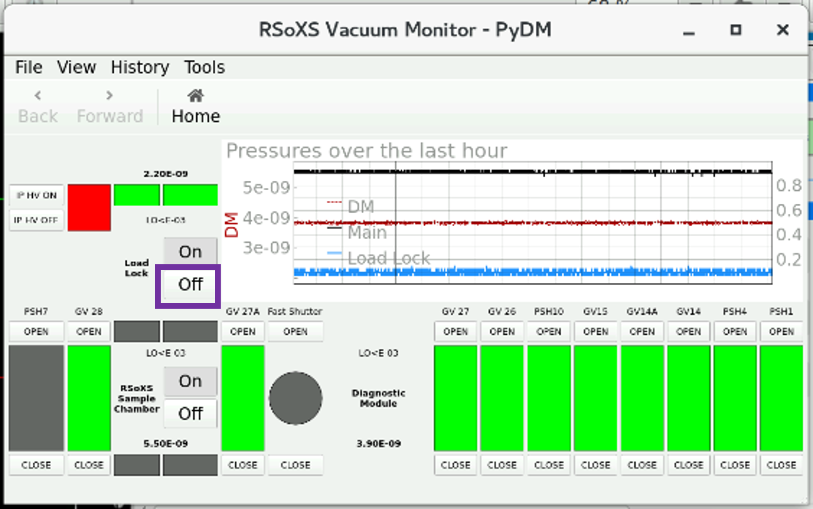
Turn off the turbo pump by first hitting the “motor” button and then the “pump” button. Ensure that both that both buttons turn gray. The controller is located on the outboard side of the RSoXS chamber and is below the temperature controller and ion gauge controller of the liquid sample load lock.
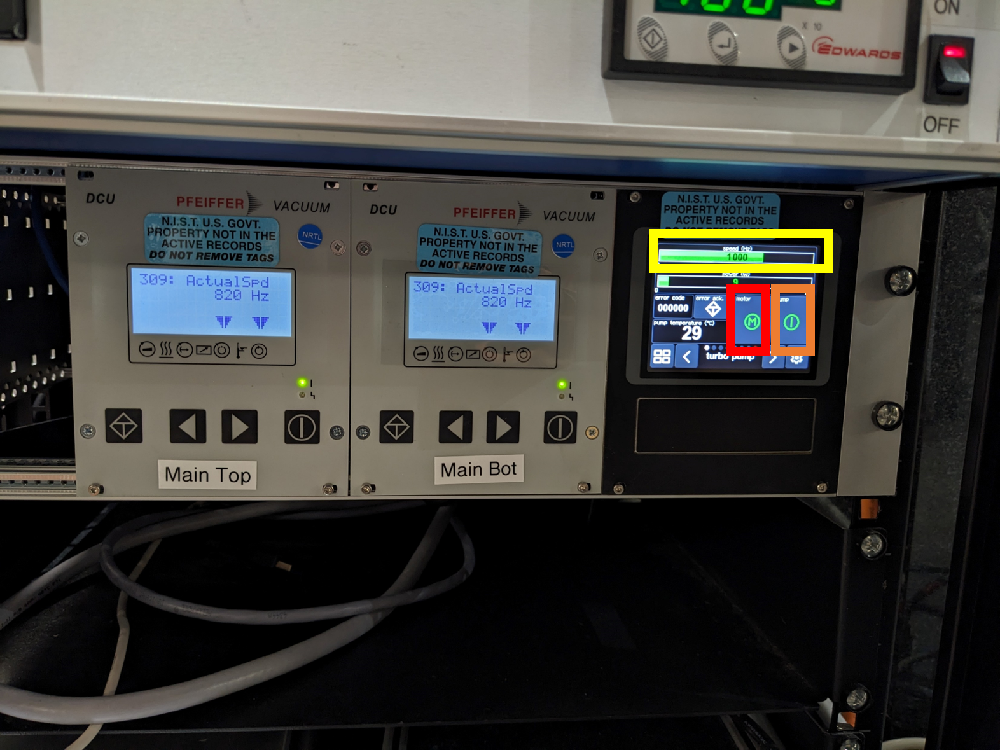
Wait for the turbo pump speed to reduce by ~50%, which is below 500 Hz. This takes approximately 5 min.
Turn off the backing pump, which is on the inboard, SST2 side by holding the red button until the lights turn off. The light will then blink.
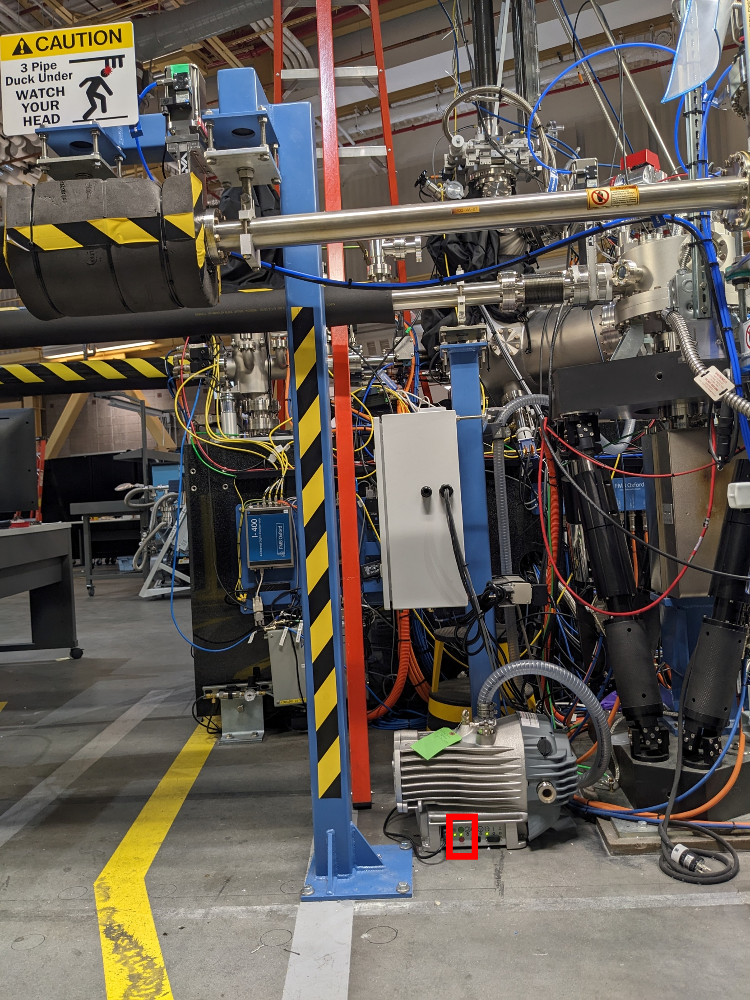
On the turbo pump controller, start venting. Press the right arrow key twice, and hit the vent button
Unscrew the load lock door so that it does not over pressurize.
Monitor the RSoXS main chamber pressure to make sure it does not exceed its acceptable upper limit. If it does, turn off the venting, and begin the pump down procedure immediately.
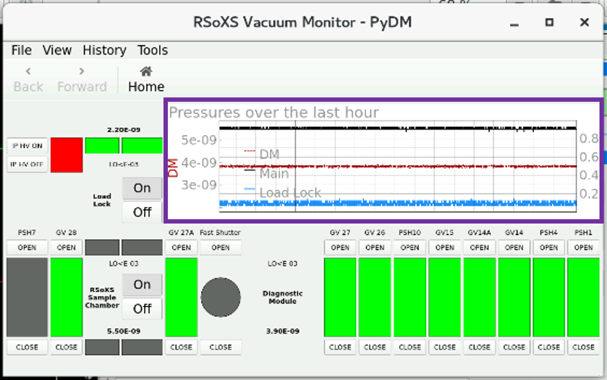
After the load lock pressure plateaus, open the load lock door when actively removing or loading a sample bar. Otherwise, it is good practice to leave the door closed to minimize dust and moisture getting into the load lock. Keep the seal of the door clean - if any dust or particle can be seen, clean the full seal with a Kimwipe and ethanol. Always use clean gloves while reaching into the load lock.
Pump down load lock
If a new sample bar is being loaded into the load lock, check the following items before proceeding with the pump-down process.
- Ensure that the desired calibration samples are on the bar (e.g., HOPG, SBA-15). Ensure that the HOPG has been exfoluated (a surface layer has been stripped off using tape and the new surface is smooth).
- Capture a bar image using
image_bar. Ensure you are authenticated into your proposal before capturing this image. - Wear clean gloves while holding the bar.
- Face the front (flat side) of the bar upstream.
- Gently push the bar into the holder until it does not go up further. You will feel two catches as you put in the bar. Be sure to push fast the first catch and ensure that the bar shoulders are close to flush with the receptacle. The bar can be tugged downward lightly to ensure that it is secure in the older.
Close the load lock door and seal with the screw lock. Also, put the blackout cover back onto the load lock window, tighten it, and ensure no light can leak in.
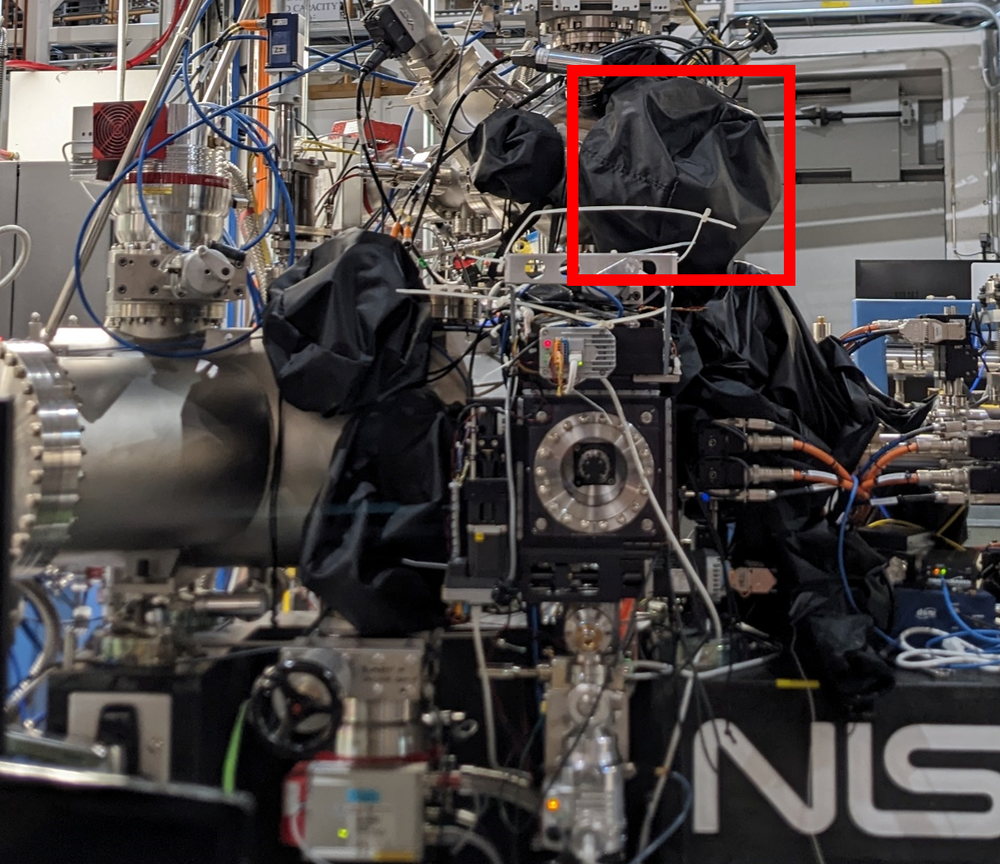
Turn off venting using the turbo motor controller.
Turn on the backing pump. Note, it will make a loud noise, and this is normal.
After the backing pump is quiet, and the pressure is in the 1e-1’s, use the turbo motor controller to turn on the turbo pump. Hit the left arrow key twice to exit the venting menu. Then hit the “motor” button and then the “pump” button.
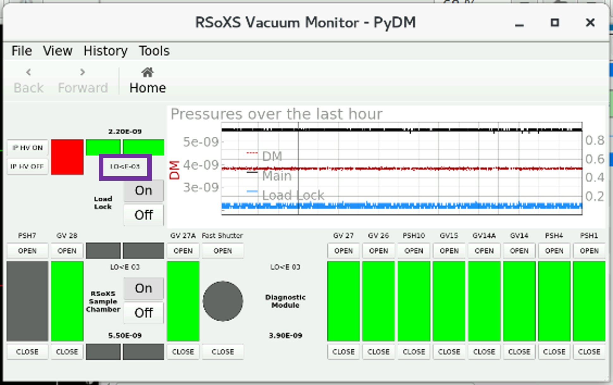
After the pressure reads LO<E-03, turn on the ion gauge, and then open the y motor bellows valve.
Monitor the ion gauge pressure. It may initially read an unrealistically low value on the order of 1e-11, but it should read a higher value after the gauge ignites, which can take longer and longer as the gauge ages, and at very low pressures. If the ion gauge does not read a realistic value after ~10 min, VERY CAREFULLY use a rubber wrench to lightly hit the ion gauge, which can assist it in igniting.
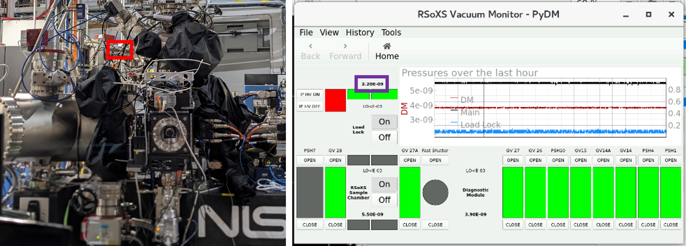
Continue to monitor the pressure on the PyDM RSoXS Vacuum Monitor, and let the load lock pump down as long as possible (ideally overnight). The load lock manual gate valve can be opened when the pressure is below 5e-7 Torr, which is typically achieved in < 1 h.
The wait time while the load lock pumps down is a good time to pick spots from the sample bar image. If the RSoXS endstation has control, then this also can be a good time to run open beam scans and other calibration/setup procedures that do not require the sample bar. For example, the phoebus live plot can be checked to see that signal values are reasonable and that the diode signal increases appropriately after the chamber light is turned on. This is also a good time to turn on the detectors and let them cool down if they were switched off.
TEM sample holder
Vent load lock
Ensure the TEM-in-out motor is <=1mm, and visually confirm that the in-out motion stage is close to the limit outward from the chamber.
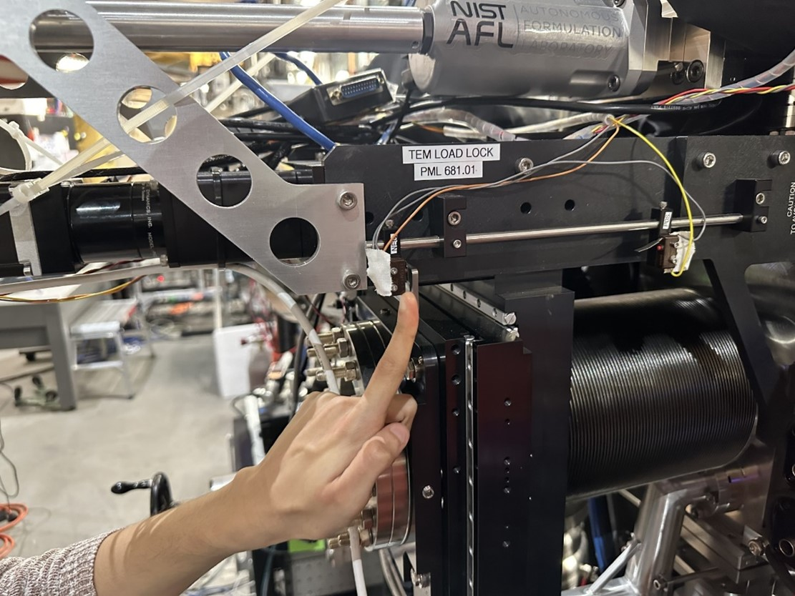
Ensure the manual gate valve between the load lock and the main chamber is closed physically and on the vacuum monitor screen (should appear dark grey).
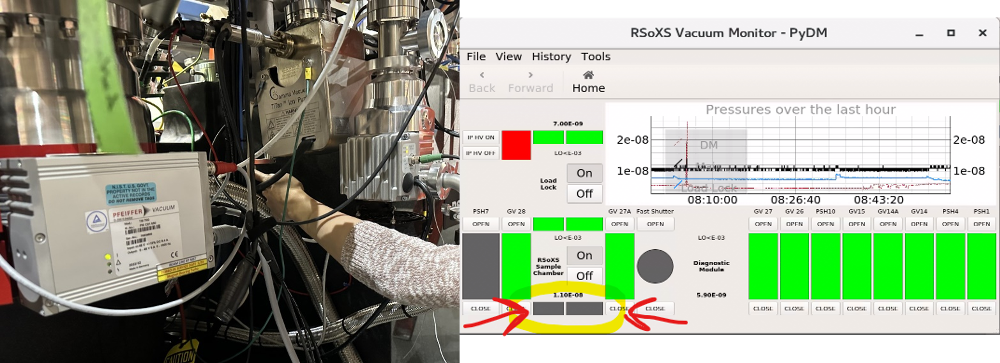
Turn off the high voltage of the ion gauge, and then turn off the ion pump. Ensure both lights are off as shown in second picture.
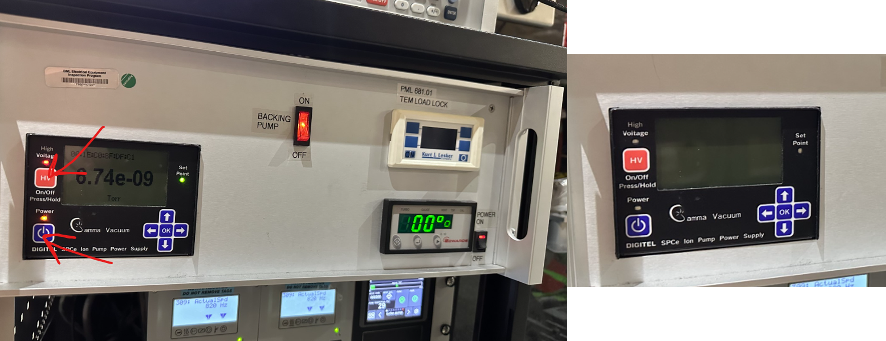
Stop the turbo pump (press the left most button once, then the center button).
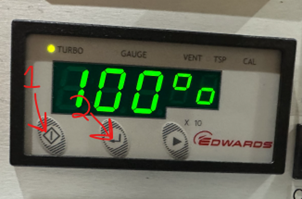
When the turbo pump is below 50%, switch off the pump power rocker switch.
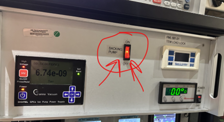
Wait for pump to completely stop, and gently try to pull the sample stage out of the load lock.
Replace the dummy holder into the load lock and restart the pump.
Pump down load lock
The pump-down procedure is the reverse of the venting procedure. See the venting procedure for pictures.
- Ensure the sample is completely pushed into the load lock (notch facing up) and there is no gap that can be felt between the head of the TEM holder and the back wall.
- Turn on the roughing pump (flip the rocking switch for the pump).
- Turn on the turbo pump press the left button, then the center button.
- Wait for the turbo to completely spin up (to 100%).
- If storing, or with the dummy holder, stop here, do not open the load lock door.
Load the sample into the chamber
- Follow all pump-down procedures.
- Once the turbo is at 100%, turn on the ion pump power and turn on the HV briefly.
- If the ion pump gauge reads any higher than 5e-5 after ~20 seconds turn the HV off and wait 10 minutes
- After the turbo pump has been at 100% for at least 5 min and the ion pump gauge reads 5e-5 or lower, you may open the manual valve into the chamber. However, continue to turn off the ion pump HV until it reads 1e-6 or lower consistently.
- After the ion pump gauge reads lower than 1e-6, you can leave it on.
- When the valve shows completely open (fully green on the vacuum monitor screen), the TEM in-out motor can be moved to ~140 mm which is roughly the “in-the-beam-path” position.